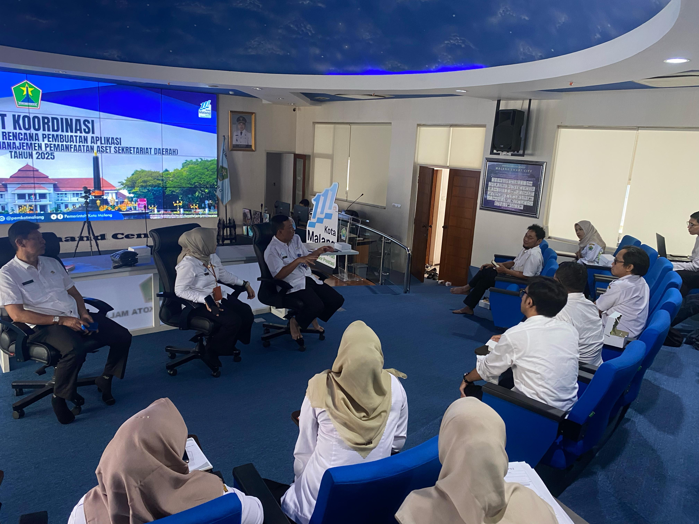
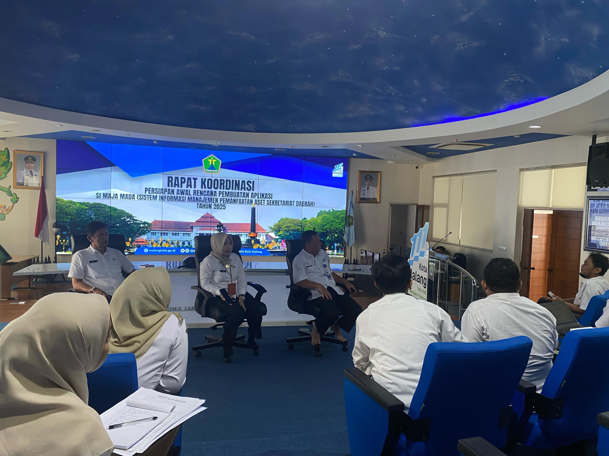
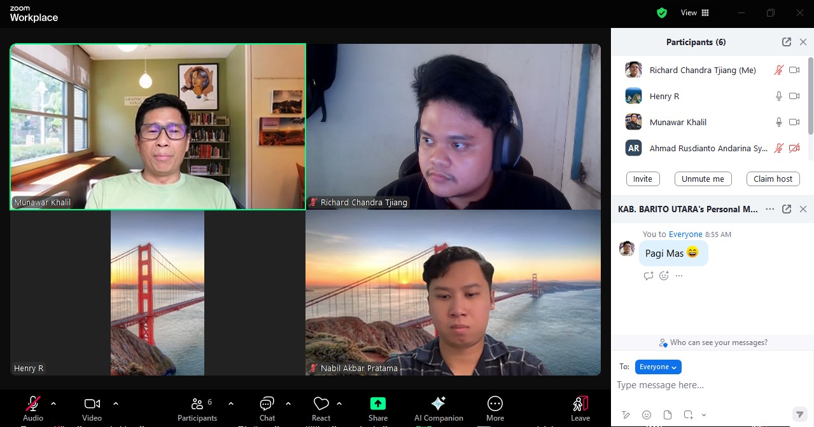

Tematic Map
The region information representation through the map and the readable data layer in one context.
Project Articles
The theme map portal to unify spatial and theatrical data as a foundation for public information access and more data-based decision-making.
Implementation context
POMPY BATARA was designed as a thematic map portal that integrated spatial and thematic data from various local devices. This platform became medium for opening development information as well as helping to read field data in the context of the region. [2]
Documented Capability
The region information representation through the map and the readable data layer in one context.
Combining spatial and traditional data to support the cross-section device needs. [2]
Public platform to expand information openness relevant to the development of the area. [1]
Real-time field data can help plan and formulate more targeted programs. [1]
Confess
Visual platform
Coordinate & Sharing knowledge
This documentary records coordination for the needs of North Barito and the shared knowledge session of the Poor City Discominfo in the context of service development and government data.



A context exchange of parties involved before system and data approach is determined.
Discuss about the experience of digital services and management of information in the government environment.
Observation of the command center workspace and the way the service context can be read together.
Online conference room supports communications cross-site for the context of North Barito District.
Documentation photos show coordination and sharing knowledge. Photos don't prove decisions, consent, implementation, or formal partnerships with the Poor City Government.
The source of the award
[2] MMC Kalteng - Northern Barito District Meet Digital Innovation Award 2026
Need a regional data system?
Altora helps design data platforms, dashboards, GIS, and integration that fit the service context.